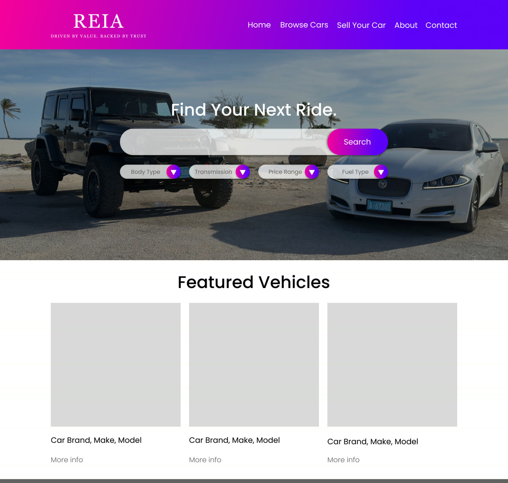
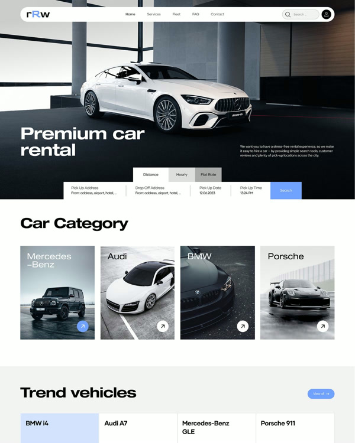
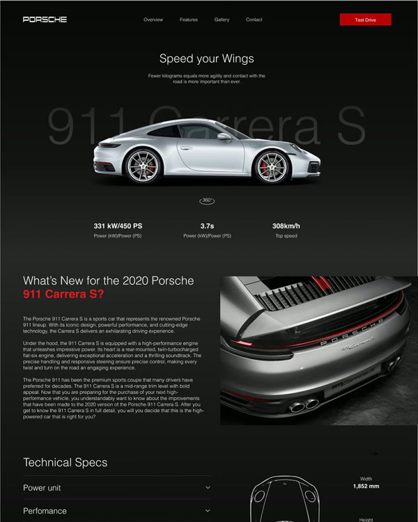
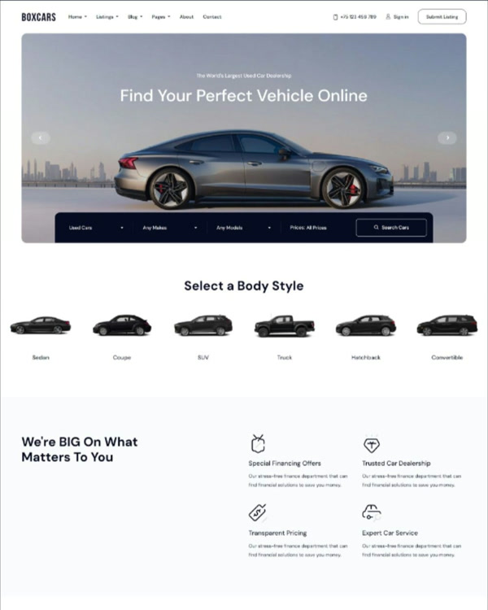
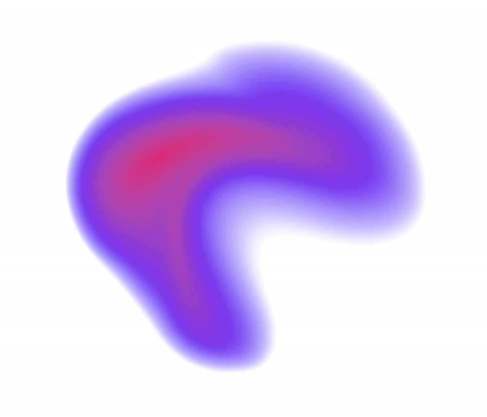
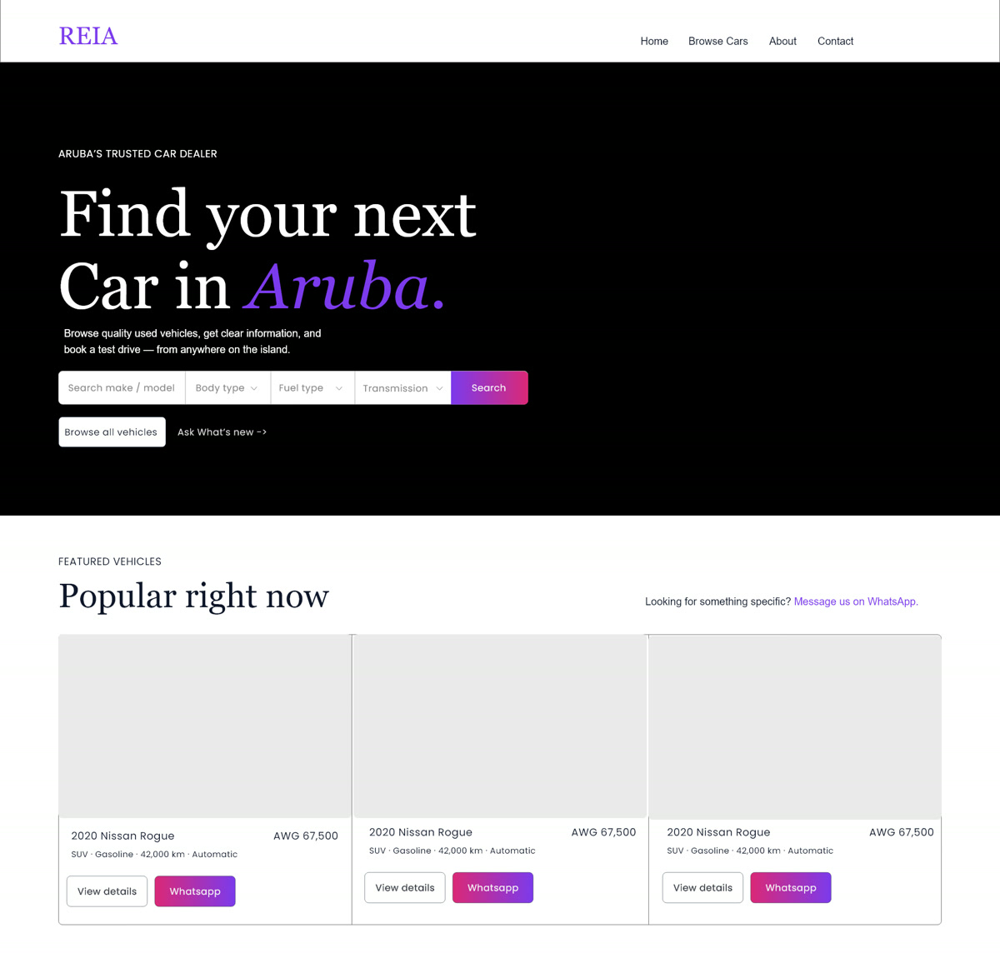
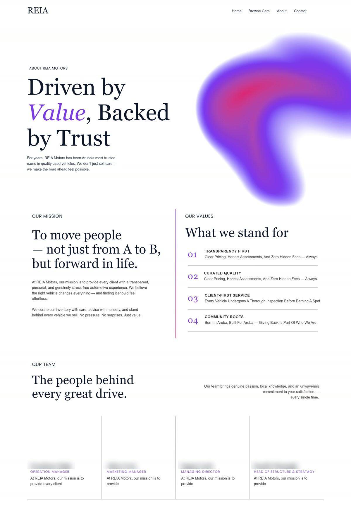

01 — Introduction
A used-car dealer in Oranjestad
REIA Motors is a used-car dealer in Oranjestad, Aruba, which also imports cars. The owner is a mutual friend, and I took over the project from the people who worked on it before me while I was on vacation in Aruba.
He wanted a website that feels clean, sleek and luxurious, and one he could manage himself without calling a developer every time a car is sold or added. I had only four weeks, and full freedom: the owner knew nothing about websites, so I was the expert and had to make the calls myself.
02 — The problem
A design that was only half there
This is the design I took over. The gradient filled the whole navigation and footer, and the car listings were still empty placeholders. It didn’t feel clean or luxurious yet, which was exactly what the owner wanted.

03 — Research
Learning from other car websites
Before redesigning, I looked at other car websites for inspiration. They had a few things in common: a big search bar right in the hero, dark and calm backgrounds that let the cars stand out, and car cards that show the key details at a glance.



Inspiration from other car websites (not my work)
04 — The redesign
Making it feel premium
The brand colour is a pink-purple gradient. Used everywhere, like in the old design, it feels loud rather than luxurious. My solution was restraint: the gradient appears only in a few deliberate places.
I also made a soft gradient shape in Photoshop by combining their brand colours. It comes back throughout the website.

Everything else stays calm and neutral, so the gradient reads as a signature rather than decoration. For the type I used Georgia, the same serif as the logo, so the website and the brand feel like one. Every car card now shows the key details and a direct WhatsApp button.

Being the expert also meant pushing back. When the owner wanted his logo bigger, I told him the size was just right: we want people to look at the cars and buy one, not look at the logo. It went the other way too. For the About page I really pushed to show the team, because faces build trust when you’re buying a car, but the owner preferred to stay anonymous, so the team section didn’t make it to the live site.

05 — Building it
From design to live site, with a CMS
I built the site myself with HTML, CSS and JavaScript. For the search bar I went for Apple’s glass effect. As you can see, I’m a fan: it makes the website look clean and professional. Behind it plays a video with a darker filter on top, and the navigation bar changes colour when you scroll.

The owner wanted to manage his own listings, so I set up Decap CMS on top of a GitHub repository, deployed through Netlify. He can add, edit and remove cars through an editor instead of touching code. Before I flew back, I explained to him in person how to use it.
06 — My role
Design and build, end to end
- Adobe XD
- Photoshop
- HTML
- CSS
- JavaScript
- Decap CMS
- GitHub
- Netlify
- Claude Code
The site is live at reiamotors.com, so you can see it in use.
07 — What I learned
“I had never worked with a backend before, and I kind of overshot when I said I could do it. But with Claude Code I managed to connect everything and make it work, which felt a little magical. It’s a simple system, but building the CMS made me feel like an actual developer and gave me a lot more confidence with technology.”